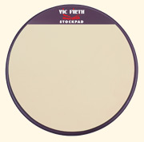
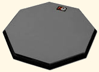
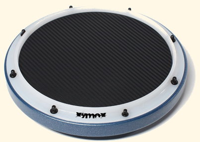
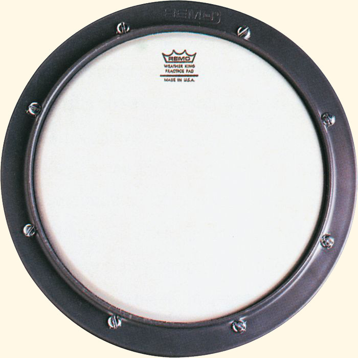

Get the Best Drum Practice Pads to Develop Your Drumming Skills
Lesson One Continued:
Let's continue Lesson One by discussing drum practice pads and everything you need to know to get a quality product that will help you develop your skills.
After getting the right pair of drum sticks, you will need a quality drum pad that is going to become your best friend. Developing great drumming chops requires many hours of practice. Practice that can be great fun and very rewarding. You need a great pad to get the most out of those hours of practice.
"Gummi-Rubber" Drum Practice Pads
There are two common types of drum practice pads being sold today.
The FIRST is what I call "gummi-rubber" pads. This is the type of drum practice pad I recommend you get for the best practice experience. These pads all have one thing in common. A slab of wood with a thin piece of bouncy rubber glued to them. There are several reasons why this type of pad works so well.
- The surface response is very much like a drum and allows you to develop great control over rebound and other essential skills.
- The surface is quiet to play on, saving your ears, as well as your neighbor's.
- It is soft enough to not cause stress on your wrists and hands through hours of practice.
The type, thickness and quality of the rubber is the most important factor when selecting one of these pads so let's talk about some of the top manufacturers and models available that will serve your needs well.
Heavy Hitter Pads by Vic Firth
The two most popular models in this series are the "Stock Pad" and "Slim Pad." I have used both extensively. Each is a 12" diameter wood disc and the only difference between the two is the thickness of rubber. I prefer the "Stock Pad" which has a 3/16" piece of rubber. The response is better and it is not as loud to play on. The "Slim Pad" has thinner rubber (1/8" thick), is much louder and feels more like drumming on a table top, which might be desirable for preparing to play on a kevlar marching snare drum head.
In my experience, after hours of practice, the louder "Slim Pad" starts to get on my nerves.
Vic Firth Heavy Hitter Practice PadsReal Feel Pads by HQ
This series of pads has several different options and sizes and are quality drum practice pads.
The rubber used by HQ is more foam-like, and not as dense as the Vic Firth product. It has a good response, but is much "softer" in it's feel. I personally prefer the denser rubber used in other pads, but I know alot of players who use this pad. It is a bit more like the response you would get from a medium tension snare drum on a drumset, and that is appealing for many reasons. It is a great pad, and probably the most quiet of the options I have mentioned in this lesson.
HQ Real Feel Practice PadsiD & Reserve Corps Pads by Xymox
My favorite pad is made by Xymox Percussion. They have many different options to choose from.
One of my favorite features is the small metal box that is filled with BB's and inserted into the bottom of the drum practice pad. This creates a "snare" sound that is very realistic and provides articulation that allows you to hear the precision of your playing very clearly. You can also customize every aspect of the pad, from the color of the wood disc, to the color of the rubber, and even have custom graphics printed on the surface. I recommend their thickest (1/4") rubber surface.
A great new pad from Xymox is their Reserve Corps Pad. This pad has a new Supertough Poly Rim and Real Carbon Fiber Laminate top making it feel very much like a kevlar snare drum head. The Carbon Fiber Laminate has a great feel and the Rim adds the ability to play rim shots. You can also get this pad with the metal box creating a "snare" sound. The clarity of this pad is awesome and is my new favorite practice tool.
Xymox has a large array of great practice tools.
Xymox Practice Pads"Headed" Practice Pads
The SECOND type of drum practice pad you should be aware of is what I call a "headed" drum pad.
These have a mylar plastic playing surface, just like a drum head. They are stretched inside a plastic or metal frame and typically have a piece of foam below the head to deaden the sound.
Practice Pad by Remo
Remo makes a pad of this type that has been around for a very long time. You will often find this type of pad in the percussion/drum kits sold for elementary or middle school beginning band programs. It is still quite common.
These pads are pretty loud as far as drum practice pads go. They have to be tightened regularly, and the head can be damaged and wear out. Before rubber surface pads came on the scene, these were very common and one of the best choices for a drum practice pad. If you already have one of these pads it can certainly work for you, but I would not recommend purchasing one.
One of the advantages of these pads is it is probably the most like a concert or drumset snare drum in its feel and response.
Tips & Warnings
- You will be spending many hours on your pad - get a quality pad by a reputable manufacturer.
- The larger 12" diameter pads are best, especially if you will be practicing with larger "rudimental/marching" snare drum sticks.
- Stay away from "electronic drum" type practice pads, they are usually more like toys than a real practice tool - just get a real drum practice pad. You will be glad you did.
 Randall Beach, Creator of DrummingExpert.com
Randall Beach, Creator of DrummingExpert.com